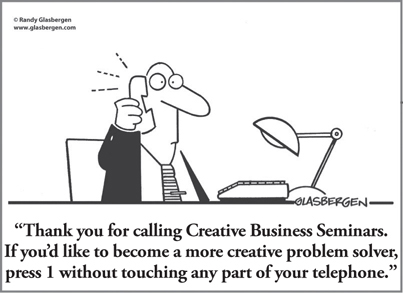

CHAPTER 21
Increasing Business Creativity and Innovation—Head First

CHAPTER HIGHLIGHTS
 The brain is the source of creativity.
The brain is the source of creativity.
 Each of us has the mental diversity within us to be creative.
Each of us has the mental diversity within us to be creative.
 Creativity and innovation are different, and both are important to business success.
Creativity and innovation are different, and both are important to business success.
 Each of the Whole Brain Thinking quadrants contributes to the creative process, but each does so in different ways.
Each of the Whole Brain Thinking quadrants contributes to the creative process, but each does so in different ways.
 The degree to which you engage all the quadrants of the Whole Brain Model in the process is the extent to which the process will be successful.
The degree to which you engage all the quadrants of the Whole Brain Model in the process is the extent to which the process will be successful.
 Compared to homogeneous teams, mentally diverse heterogeneous teams have a clear advantage in terms of the quality of their creative output.
Compared to homogeneous teams, mentally diverse heterogeneous teams have a clear advantage in terms of the quality of their creative output.
“But we are the creatives!” exclaimed the lead executive of the ad agency team. Clearly, he was feeling somewhat threatened. The idea that we would put them in a room with their large consumer products client’s brand team to learn creative problem solving together made them nervous. They were uncomfortable because they felt that the program was demystifying the “magic” of their creative process. Creativity was the domain in which they were the “experts,” the area for which they were getting paid a lot. They were as yet unaware that the applied creative problem-solving process they would learn would go beyond their definition of “creativity.”
The client insisted. The leaders had become frustrated by the infighting and lack of cohesion that were resulting in project overruns, which were costing the company a lot of money. They felt that by learning together, the two teams would be able to maximize the advertising investment being made for each product line. The brand team’s problems would be better understood by the agency team, and the agency team’s advertising recommendations would be more in line with the brand team’s expectations.
Once the members of the agency team were convinced that they should attend the workshop we were delivering—and were willing to bring the brand team and the creative team together for the experience—it became evident that all the participants had something to contribute to the team’s creative problem-solving process. The program focused on specific, real-time brand product problems, including analyzing the problem/opportunity, evaluating customer input, finding new ideas for effective positioning, looking at team communication and process issues, and dealing with technical and execution challenges. All the different processes across the mental spectrum were required to resolve those differing aspects of the problems successfully across the two collaborating teams.
The ultimate outcome of the pilot session was a greatly enhanced team process, alignment of team objectives (which provided significant savings of money and time that had been wasted on “misfires”), and a genuine respect for the different perspectives that each of the team members brought to the table. The two teams that had not been able to work well together prior to the program were so engaged that they refused to end the workshop, and worked hours beyond the normal closing time in order to take advantage of this newfound motivation. A series of subsequent programs was rolled out over several years with similar results, demonstrating that creativity was indeed crucial for success and available to all—even those who didn’t work for an advertising agency!
Years later, demand for creative thinking has never been stronger. It is being clearly articulated by business leaders as essential for driving growth and maintaining a competitive edge, and in a recent IBM CEO study,1 creative thinking was cited as being among the top three traits leaders are seeking out in employees.
Particularly as the world grows more complex and the pace of change just keeps getting faster, we find ourselves looking for ways to unleash new perspectives and fresh thinking about our products, markets, internal challenges, and competitors. From developing new offerings to coming up with better ways to “do more with less,” we need every bit of our creativity at work to discover new answers and see the opportunities that others might miss.
Yet there continues to be a lot of mystique around the creative process. Many people will shut themselves down, saying that they’re “just not creative.” In fact, once creative thinking is understood as a series of thinking processes that can be applied and learned, it suddenly becomes available to us all.
Creativity is part of the human condition. It is an important aspect of life from early childhood to old age. It takes many forms, from child rearing to learning languages, to arts and crafts, to cooking, to gardening, to composing, dancing, writing, problem solving, and inventing. These are just a few of the many aspects of life that help define the domain of creativity. Out of this list, the words problem solving and inventing strongly suggest a business application of the creative process. It is the business application of creativity that is the focus of this chapter.
In describing what creativity is and how it works, I often use the word innovation in partnership with creativity. The reason is that many businesspeople use the term innovation in place of creativity because they feel more comfortable with the former term. Actually, I believe that there are significant differences between creativity and innovation. I will present an argument that strongly suggests that business needs both, but that in terms of process, they are a bit different, and I will describe what those differences are.
Whatever you call it, if your competitors have the same products, the same markets, the same customers, and the same delivery systems as you do, unleashing the creativity of your organization can make the winning difference.
Unleashing Creativity
It is a foregone conclusion that business executives would like to unleash the creativity they are sure is locked up in their organizations. They talk about it in staff meetings, write headlines about it in the internal newsletters, and proclaim it as a company goal at the annual meeting. We hear it all the time: CEOs announcing, in one way or another, “What this company needs to do is to unleash the creativity of its employees.”
But there are consequences, and the consequences of unleashing creativity are often not considered. For starters, unleashing creativity means that risks will have to be taken. Mistakes will be made, rules will have to be changed, and the status quo will be challenged. In fact, business assumptions will have to be reconsidered and leadership concepts will have to be altered. You can count on the fact that none of these results are what the leaders had in mind. All they wanted was the fruits of creativity, not the challenges to the status quo that are integral to the creative process.
The creative process is not “business as usual.” It’s like having 100 or 1,000 or 10,000 tightly wound springs suddenly releasing their energy into the organization at random. Those business leaders who recognize this tend to be fearful of it; those who do not tend to underestimate the power of creativity. In either case, they’ll often try to manage and control it, but this approach won’t be effective because it inhibits by design the natural flow of creativity. In order to cultivate creativity, you have to understand the process.
The Brain Is the Source of Creativity
Creative thought processes are the result of specialized mental modes that respond situationally to life’s experiences. Idea generation is in fact a neural event. Neural transmitters streaming across the synaptic gap convey the electrochemical elements of an idea in formation. We are learning more every day about how ideas occur in our brains, but we know that they arise in specialized parts of the brain that, through massive interconnections, can come in contact with other ideas and together form the basis of synergy.
Creative and innovative thinking work best when the brain is up to the challenge of increased synaptic activity. Whether you are feeling sharp or dull at any given moment can be due to the chemistry in your head. Some people refer to their bad brain days as, “I’m just not thinking straight today.” Other times, the ideas and thoughts just keep coming, and you may think to yourself, “I’m really sharp today.” And when you are really on top of things, you may feel not only tuned-up mentally, but also creative and smart.
This is how it works. The brain is an electrochemical organ. Neurotransmitters are the chemical agents that cause synaptic transmissions to take place, which in turn produce electrical potentials, which, together with the chemical reactions, power the brain in its thinking processes. There are more than 100 neurotransmitters, such as serotonin, that stimulate synaptic transmissions. Each neurotransmitter has a matching receptor that’s like a lock and a key. If there are no matching receptors, then the neuron-to-neuron synapse will not take place. When the synaptic transmission does not take place, we are less sharp. When those transmissions do take place, we have the potential for being smart and creative. The greater the synaptic activity, the more likely it is that ideation will take place.
In order for its chemistry to work, the brain must be properly fed. What we eat and drink fuels not only our bodies but our brains as well. There are so-called smart foods and drinks that purport to stimulate our mental activity by fueling the neurotransmitters that are the basis of synaptic interaction. Choline, for example, is a precursor for the neurotransmitter acetylcholine. Studies have shown that increasing the consumption of raw beef liver, broccoli, cauliflower, spinach, hard-boiled eggs, codfish, milk, wheat germ, chicken, grapefruit, peanuts, and almonds (among other things) can boost your choline levels. Research is ongoing as to whether consumption will have a long-term positive impact on memory and cognitive function, but the bottom line is clear: the greater the flow of neurotransmitters, the greater the synaptic activity.2
Sleep is also important if our brains are to operate for peak creativity. The adage of “sleeping on it” has been scientifically validated. Studies by Dr. Jan Born3 at the University of Lübeck in Germany (reported in Nature, January 2004) demonstrated that memories are restructured in the first four hours of the sleep cycle, enhancing memory and creativity.
The detailed inner process of synergy among all the different specialized areas of the brain that takes place naturally is a key characteristic of both creative and innovative thought. Although these two processes have a lot in common, they have individual uses, which we will discuss in this section.
Whole Brain Creativity and Innovation
Over the years, many descriptions of creativity have referred to it as what is often called a “right-brained” process. The model of applied creativity and innovation I will describe here is a process that, from concept to completion, takes advantage of all the brain’s specialized modes. When researching creative processes for the programs I created at GE, I found that the stages defined by Graham Wallas4 fit my vision of a Whole Brain creative-thinking process. The specialized characteristics of each quadrant and of each mode of the Whole Brain Model are applied in various combinations as the process takes place. A missing quadrant or mode will tend to stall or even shut down the entire process. In order to apply Wallas’s original concept to my own, I added two elements, which are necessary if the process is to be successful and complete. They are interest and application. Interest gets the process off the ground, and application ensures that the ideas aren’t left up in the air but are implemented to solve real problems.
The elements of the expanded process as I apply it are as follows: interest, preparation, incubation, illumination, verification, and application (see Figure 21-1).
FIGURE 21-1 Whole Brain creativity and innovation iterative model.
Interest is critical to engaging in the creative process. Without it, you can’t really get started. It is quadrant-neutral and can emerge for a wide variety of reasons. For example, it may start with an urge to solve an issue, curiosity, the desire to deal with a human need, or an intriguing technical challenge. As obvious as this may seem, interest provides the necessary fuel for the process to get initiated.
The second stage of the process is preparation. This step requires gathering information, analyzing the facts, and chronological sequencing of those facts into accurate statements of the problem.
Consider this situation: you work for a company that records concerts and other live entertainment, and it has been looking for new applications to give it a competitive advantage. You just can’t get excited about finding more ways to dress up the on-screen graphics, but you’re intrigued by this challenge. For the last couple of days, you’ve been thinking about your music fanatic nephew who lives in a small town and rarely has the opportunity to experience a concert live and in person. You have the interest and therefore a strong motivation to tackle this problem: a method of filming and recording concerts that replicates as closely as possible the sights, sounds, and feelings of being there in person.
In the preparation stage, the definition of the exact problem to be solved needs to be stated. Let’s say it is, “How to create an interactive, immersive online entertainment experience so that those who can’t attend the live event will have a great experience.” An analysis of this population’s needs would have to be made, along with an assessment of how new technology and ways of filming and recording the events would address these needs better than what is currently available. The preparation phase requires delving into more A- and B-quadrant thinking approaches.
The next phase of the process involves incubation. This is where the brain, now having a problem to work on and being motivated by personal interest, processes that problem in both conscious and unconscious ways that allow the brain’s natural problem-solving processes to be engaged. This incubation stage of the creative process clearly draws more on C and D types of mental activities, making use of intuitive and conceptual understanding to bring potential solutions up to a conscious level. It often works best when we are totally disengaged from the task at hand and are relaxed or tinkering with something else.
Continuing with our example, after you’ve defined the problem and collected the facts, you let all this information simmer, so to speak. This is where your brain makes connections as you attend a few live shows and soak up the surround sound at a 3D movie. You are not consciously looking for solutions in this stage; you are simply going about your day in a relaxed manner. Sometimes incubation can take a few hours, and other times you will continue to incubate as the preparation process continues. This creative problem-solving process does not happen in a neat, chronological manner. An iteration between stages is often necessary before ideas begin to emerge.
The next stage is called illumination, which is frequently referred to as the aha! or eureka! event in the creative process. This is where ideas suddenly pop into our minds as potential solutions, sometimes as an accompaniment to the theta brain waves that we experience while we are daydreaming. The illumination stage integrates all the aspects of the creative process that took place in the interest, preparation, and incubation stages. And through integration, synthesis, and synergy, ideas present themselves in response to everything that has happened along the way.
Let’s go back to the virtual concert experience project. You’ve been experimenting with different methods, but you’re not making much progress. Getting frustrated, you decide to take a break and play with your flight simulator program. Once you’ve crashed for the last time, you go to bed and fall into a dreamy state. You dream about your nephew playing with the flight simulator program. Then you notice that he’s not in the flight simulator but moving throughout the stadium of the concert you attended last week. He takes his place near the front, with the crowd chanting all around him as the amplifier crackles and the music seems to vibrate up through his chest. Then you wake up, with fractured memories of this dream. All of a sudden it clicks. You grab a piece of paper and jot down fragmented thoughts and notes. In a minute your mind is racing, trying to figure out how you can apply these thoughts to the process of filming and recording a virtual concert.
The next stage that is needed is verification, which requires a hard-nosed, objective review of the potential solution in relation to the facts of the original problem. Does this new idea have any relationship to the original problem that you were attempting to solve? Verification is necessary, since the idea-generating activity that results from the illumination process can come up with all manner of potential ideas, some of which have no relationship at all to the problem at hand. They may, in fact, be solutions to problems that have not yet been defined. So a critical assessment of the appropriateness of the potential solution has to take place before that potential solution can be applied. Once again, you’ll need to draw more on A/B processes that take particular advantage of the critical, diagnostic, and analytic capabilities of the A quadrant.
Now that you have some potential solutions, you need to critically assess their relationship to the problem. Is a particular solution feasible? Will it truly improve the virtual experience? Or does this concept lend itself to a totally different application? You think this solution will work for your needs, but you have to check it out.
Once a solution has been verified, application is the next step in the process. This is actually a Whole Brain process in its entirety, but it starts with more of a B-quadrant-oriented focus on implementation, with some analysis from the A quadrant, interaction with the “customer” in the C quadrant, and taking into account the big picture and whole application process in the D quadrant. As you attempt your initial applications, you may need to revisit the verification process. Does the potential solution fit the original problem, and is the application viable? Does the thing work? What do you need to do to make it work? And when you finally get it to work, does the idea solve the original problem?
As an example of a process that emerged during the illumination stage and didn’t pass the verification process for the problem that the developer was trying to solve, consider a specific adhesive developed by 3M. In trying to create an adhesive that was very thin but extremely strong, the developer created a glue that was easily applied, but wasn’t permanent enough to be what the company was looking for. Later on, a 3M colleague, Art Fry, had been in church for choir practice, grappling with a regularly occurring problem with his hymnbook: Fry would bookmark his hymnbook with pieces of paper, but by Sunday morning, they would have fallen out. Art had a moment of illumination. Here was the perfect application for this faulty adhesive: a nonpermanent way to stick memos to hymnals—or anything else! Voilà! The birth of Post-it Notes.5 Even though this particular adhesive didn’t meet the requirements for the original application, another aha! moment pointed to a completely different application that could easily have been discarded. The next process step, application, brought the Post-it Notes product we know today to the world of additional uses.
It is important to note that, although the description just given goes through the process steps sequentially—from interest to preparation to incubation to illumination and, finally, to application, as shown in Figure 21-1—in reality, the process is much messier, iterating back and forth across the quadrants, like zigzag lightning, engaging the whole brain. This zigzagging path is more of a true reflection of how the brain works, as shown metaphorically in Figure 21-2.
FIGURE 21-2 The messy Whole Brain creativity and innovation iterative process in reality.
Diagnosing this creative process leads to only one overarching conclusion: all quadrants and modes are involved, and the degree to which all of the brain contributes to the process is the extent to which the process is successful. Leaving out a critical step or an essential mental process will adversely affect the viability of the creative solution or idea.
While these are completely natural processes and often take place without our really being aware of the steps and sequence, creativity can be greatly enhanced if we understand the process and engage in it in a conscious way. For this reason, creativity, which can be taught, should be taught. Our experience is clear: creativity will be unleashed with greater efficiency and success when an individual or group has been trained in the creative process. Through that understanding, everyone knows that he or she has a way to contribute to the process, and, more important, there is a far greater sensitivity to the climate required for the process to take place in order for the fragile nature of idea generation to thrive.
Riding the Brain Waves for Better Results
Another way to improve your creative outcomes is to understand the role that brain wave states play, as you can apply this knowledge to optimize each phase of the process.
Although every brain is unique, all brains are electrochemical. Electrical brain waves supply a convenient measure of the brain‘s operating status at any given time. Just as we are a coalition of the four thinking selves (rational, safekeeping, feeling, and experimental), we are equipped with five brain-wave states: gamma, beta, alpha, theta, and delta (see Figure 21-3), each one specialized for a particular kind of neural activity. The more we understand these brain wave states, the more we are able to consciously engage in them to enhance our thinking. Brain wave states are defined by electrical frequencies, measured in cycles per second (cps) or hertz (Hz). To best leverage your brain for creative thinking, it is important to know and recognize the different brain wave states and recognize when and how they occur most frequently for you.
FIGURE 21-3 Five key brain waves common to all human beings.
Beta represents the aroused, alert state. The frequency ranges between 13 Hz and about 30 Hz. The higher the number, the more aroused or alert the brain state is. When you are brainstorming, you are most like to be in beta, which may or may not be the most opportune time for you to generate ideas. If you get a lot of ideas when you are interacting with others, this may be a prime creative brain state for you.
Alpha represents the absence of arousal. This is a calm, meditative state and is defined by brain wave frequencies of 9 to 12 Hz. When we are in deep contemplation or idea incubation, we are likely to be in an alpha state. Many people experience aha! moments and insights in this more relaxed state, especially when they are showering, exercising, or listening to music.
The next state, theta, represents a very open, free-flow creative state. The brain-wave frequencies for theta are 5 to 8 Hz. For many people, the shift into theta occurs naturally as they fall asleep or wake up in the morning. You may find that you have a lot of ideas, often fleeting, at that time.
The delta brain wave state represents deep, dreamless sleep. The frequency range for delta is 0.5 to 4 Hz. Many people describe waking up in the morning with an idea or a sense of an idea. Some years ago, we were working with DuPont engineers who were struggling with a challenge on the factory floor that had them completely stumped: how to stop hoses from collapsing. The solution came from an idea that an associate on the line brought up based on a dream he’d had the night before: a Slinky! The Slinky gave the team the idea of putting a coil in the hoses to prevent collapse, and this immediately solved the problem. Had the individual and the organization not understood the power and mechanisms of Whole Brain Creativity and thus been open to listening to a “crazy” idea about a Slinky, they might still be stuck!
Finally there is the gamma range, which was discovered more recently. Running from above 30 Hz to as high as 100 Hz, gamma is the fastest frequency. While there is still much more to uncover about the gamma state, initial research shows that gamma waves may be connected to learning, memory, and information processing.
My early experiments with brain wave states measured by an EEG (electroencephalograph) and a Mind Mirror that displayed the activity by right or left hemisphere demonstrated that all of these brain waves are typically present at any given time, but that they vary greatly in terms of the distribution of beta, theta, and delta brain waves. When a person is fully alert and engaged in performing a task, a high percentage of that person’s brain waves will be in the beta range. The more intense and the more alert you are, the higher the frequency of those beta waves. At the other end of the spectrum, an individual who is deeply asleep will have the highest percentage of his or her brain waves in delta, and the deeper the sleep, every 90 minutes the coalition of brain waves shifts to include an increasing amount of theta waves. It is these theta waves that introduce some of the fantasy trips and “movies in the head” that take place during REM (rapid eye movement) dreaming.
The types of ideas that occur to you when you are not always working on the problem may be your best thinking! Remember the DuPont employee who dreamed of a Slinky? Had he not captured that idea and held onto it, the company might still be trying to solve the collapsing hose problem. Brain wave research conducted by creativity researchers, including me, suggests that there is a close alignment between the brain wave states just described and the stages of the creative process: interest, preparation, incubation, illumination, verification, and application.
The findings are as follows:
Interest is a general state of alert consideration of a problem situation. The brain state is most frequently beta.
Preparation for applying the creative process to a specific problem situation involves beta at the higher frequencies: more intense, more purposeful, more applied.
Incubation of a problem situation following preparation takes place in alpha, with the lower-frequency, high-amplitude brain waves producing the best results of contemplation—it may even touch theta.
Illumination, which is often described as the aha! stage of the process, takes place for most people in alpha or theta. This is the stage where the potential solution presents itself in the form of an idea, which, as described earlier, sometimes occurs at 2:00 a.m., or in the shower, or while commuting to work. There is a lot of new research on “the moment of insight,” confirming that there seems to be a resting state prior to the aha!. Note: the idea may still be somewhat “raw” or unformed (like the Slinky was for the DuPont employee). You may need to hold on to the idea as you move to the next stage to see if it really solves the problem at hand.
Verification returns the mental process to beta and is the stage when an alert evaluation of the potential solution is considered in relation to the original problem. This is generally high-frequency beta.
Application is the final stage of the process and continues as an aroused beta-level activity.
The creative process I have just described takes advantage of the four quadrants of the Whole Brain Model and the brain wave states that are involved in a conscious processing of the discrete stages of creativity.
Following the Creative Selves Model
As I said earlier, Graham Wallas’s model naturally correlates with a Whole Brain creative process. In the Creative Selves Model, the quadrant descriptors reflect the principal aspects of how each “self” across the quadrants typically shows up in the Whole Brain Creativity process: the problem-finding self for A, the implementing self for B, the idea-sensing self for C, and the idea-finding self for D (see Figure 21-4).
FIGURE 21-4 The creative selves model.
It is well documented that Albert Einstein imagined himself riding on a beam of light as a prelude to conceiving the theory of relativity. Einstein considered his gift for fantasy much more important to his thinking repertoire than the more rational and organized modes of thought. He felt that he’d really had only two “big” ideas in his entire life, and that he had spent many years either preparing them or confirming their validity. For him, the acquisition of knowledge, facts, data, and statistics was simply preparation for the intuitive process from which his epochal ideas emerged.
Einstein didn’t set up his fantasies; he simply experienced them, captured them, and took action as a result. The connection occurred in the subconscious and manifested itself through a mental process that “speaks” metaphorically in fantasy or dreams. Most of the time we can’t plan this; it just happens. But we can help it happen more often by learning to tap our dreams and fantasies, and by having a capture system ready to record the resulting ideas. (See the “Put It to Work” activity earlier in this chapter for ways to capture your ideas.)
Mental Diversity and Synergy
I have mentioned before that individuals are not single entities, but rather a coalition of four selves—a self-contained team. The diversity within an individual provides the basis for synergy. A rational idea juxtaposed with an intuitive thought can produce a new idea through synergistic interaction. When someone is working alone, this may require some stretch, but it is doable and effective. When more than one person is involved, the diversity of mental preferences that exists naturally can significantly enhance both individuals’ creative potential. Therefore, teams that are assembled to deal with creative problem situations should be formed on the basis of diversity of thinking preferences. Our experience has shown that there is a clear advantage to having all four thinking modes represented on a team (heterogeneous) rather than those with similar preferences (homogeneous). This is not an untested theory; it is a popular and successful technique that we have employed extensively for more than three decades. (See Chapter 12 for more on the creative problem-solving power of Whole Brain teams.)
It isn’t that a homogeneous team can’t come up with a creative solution. The fundamental problem is that homogeneity leads to quick consensus. The members of the team think alike. They are on the same mental wavelength, so there is little confrontation of opposing concepts and ideas. No matter how much time is allocated to the homogeneous team, especially one with strong A or B preferences, it will typically come back early with a workable solution. The team members will say that taking more time to consider the problem would be a waste of time and counterproductive. They’ve already gotten the “best answer” available, and they did it quickly. Early consensus can be an advantage, but not in the domain of creativity and innovation. The absence of continued interaction results in missed opportunities. In a direct comparison of homogeneous solutions with heterogeneous ones, the quality of creative team output is clearly in favor of the heterogeneous teams. I would estimate the advantage at over 80 percent.
Considering this clear advantage, why in the world would anybody who’s looking for a creative solution form a team that’s not a heterogeneous, diverse group?
Among the reasons are:
1. The people in charge aren’t aware of the advantage.
2. They don’t have a way of assessing the thinking styles to assemble such mentally diverse teams.
3. They don’t know enough about the creative process to understand the significance of diversity.
4. They can’t be bothered with these kinds of theories.
One immediate way you can increase the creative output of your work is to partner with diverse thinkers, in pairs and in groups. Be diverse by design!
Creativity and Innovation: Similarities, Differences, and Why Business Needs Both
The term innovation has become confused with and synonymous with creativity in recent years. I think of creativity and innovation in both similar and in differentiated terms. They are both mental. They both add value. They both involve process. They both have elements of the other embedded in them, but there are significant differences that those who apply these processes need to know in order to optimize the added value that each can contribute.
I see creativity as being grounded in originality. The process starts with a bare desk, an empty notebook, an unrecognized beginning. Remember such inventions as the lightbulb, television, or telephone? These are all examples of new creations. In sharp contrast, I think of innovation as having a beginning that is grounded in already-invented products or processes. Therefore, I see innovation as building on existing, already-created concepts, ideas, processes, and devices. Innovation, then, is more in the nature of elaboration and extension, building upon the existing results of previous creative activity. Both processes can come up with new and novel ideas, but the needed elements of originality are missing from the process of innovation.
An obvious example is the iPod. MP3 players existed before the iPod was created, but the form and user interface of the iPod was a significant innovation beyond the idea of an MP3 player. Another example might be an original piece of music that exists in the form of melody and accompaniment. Up to this point in the process, we are dealing with a product of creativity. When a music arranger elaborates on the original melody and accompaniment and develops a full-blown orchestral arrangement, this is a product of innovation. The original creative element of the finished product is there in its entirety, but now it has been given additional value in the form of an arrangement that brings in additional instruments and additional musical patterns woven around the original melody.
If a business limits itself to just the “innovation track,” it is basically restricting its future to elaborations and extensions of its (or others’) current and past products. For most businesses, this is not enough to allow the company to prosper and differentiate itself, and, in fact, not enough for it to survive the ever-present creative competition.
When you consider that most businesses need to continuously elaborate on and extend their existing product lines as well as create new ones, using both creativity and innovation is clearly an advantage. This requires a new way of thinking about both and being very clear about what you mean when you use the terms. Innovation occurs largely within the existing paradigm of a product or a process, whereas creativity can be in a totally different paradigm. Since it is not bound by the past, it is entirely original, with a starting point that is based upon a new need or a new problem to be solved. Creativity can be a fresh concept or a breakthrough idea resulting from experimentation or just playing around. In any case, creativity and innovation both require Whole Brain Thinking, and the four stages of the process apply to each when we are looking for ideas—whether new ways to do what we are already doing or a completely new thing to do!
SO WHAT?
 The brain is the source of creativity, as it is of all mental processes.
The brain is the source of creativity, as it is of all mental processes.
 Because of a general lack of understanding of creative work and creative people, many management decisions regarding jobs and people are counterproductive. Everybody loses—the employee, the manager, and the company.
Because of a general lack of understanding of creative work and creative people, many management decisions regarding jobs and people are counterproductive. Everybody loses—the employee, the manager, and the company.
 Creative and innovative thinking work best when the brain is up to the challenge of increased synaptic activity.
Creative and innovative thinking work best when the brain is up to the challenge of increased synaptic activity.
 You can better tap into your most creative time of the day by paying attention to your brain states and capturing the ideas that result.
You can better tap into your most creative time of the day by paying attention to your brain states and capturing the ideas that result.
 Heterogeneous teams will produce greater creative output than homogenous teams.
Heterogeneous teams will produce greater creative output than homogenous teams.
 Innovation and creative thinking both require and benefit from a process that draws on Whole Brain Thinking.
Innovation and creative thinking both require and benefit from a process that draws on Whole Brain Thinking.